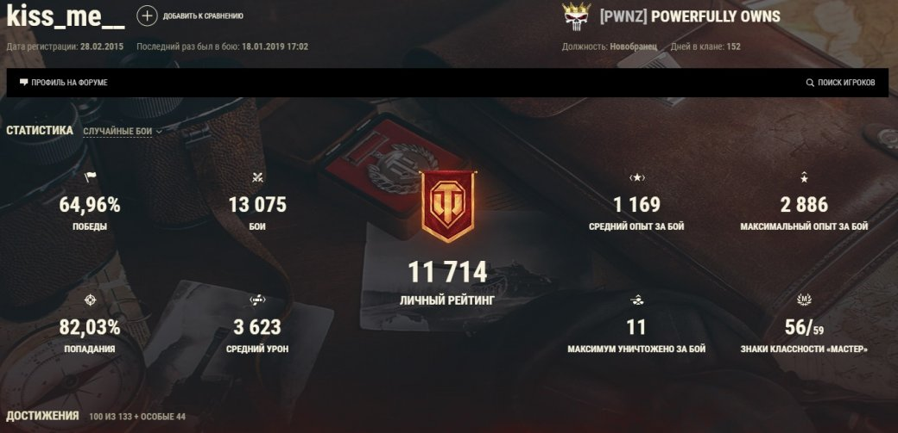

Девушка «разваливала» всех в World of Tanks, пока не выяснилось, что за нее играл парень | Канобу - Изображение 1 Последние несколько дней в сообществе игры World of Tanks активно обсуждается бан стримера Натальи «Kiss Me». Больше года девушка успешно «разрывала» рандом, имела рейтинг на уровне лучших игроков, гребла донаты лопатой, но 18 января получила бан от разработчиков.
Основная причина — передача аккаунта другим лицам. Само собой, девушка пришла в ярость от решения разработчиков:
Я вообще <в шоке> от этой игры и этих разработчиков. Какая передача аккаунта? Вложено в аккаунт миллионы долларов и меня банят за то, чего нет, а то, что целевая аудитория танков играет с запрещенными модами, всем <наплевать>. Лучшая игра за всю историю человечества, всем рекомендую!
Неужели пострадал невиновный человек? Факты говорят об обратном. Во-первых, Наталья стримит без вебки, что уже как бы намекает, что здесь что-то нечисто. Мало того, она однажды написала, что вебки нет и не будет никогда. Во-вторых, «Kiss Me» на своих стримах говорит о чем угодно, но только не о самой игре. Она охотно беседует на отвлеченные темы и спокойно набивает по 6 000 среднего урона. Ни один крутой игрок в World of Tanks не сможет задвигать темы про жизнь и раздавать «шоты» направо и налево.
TR1SSДевушка экс-игрока NAVI Олега «Straik» Романенкова — TR1SS, являющаяся активным игроком в танки, считает, что разработчики не могут забанить за просто так.
Если забанили, то значит по делу. Не может быть такого, что забанили просто так. Разработчики не тупые и просто так ничего делать не будут. Можно говорить что угодно, но не делать того, что раз и навсегда опровергнет все якобы лживые претензии — это странно. Единственное, что ее спасет, это вебка. Не надо даже лицо показывать, никому не нужно ее лицо. Вот она сидит играет, видно монитор, видно, что сидит девушка, и просто на стриме показать, как она играет и делает свои три отметки на всех танках. Почему этого не сделать? Это же такой хайп!
Большинство игроков и стримеров считают, что функции «Kiss Me» ограничиваются лишь комментированием, а за нее играет Михаил «Mixa60RuS» Ларионов, на которого в конце 2017 года было заведено уголовное дело за экстремистские высказывания в видео.
Игроки заметили, что модули и оборудование на танках у «Kiss Me» стоят в таком же порядке, как и на аккаунте Михаила. Что-то слишком много совпадений, не замечаете?
 Основной акк «Kiss Me»Все это намекает на то, что это был грамотно спланированный бизнес-проект. Девушке активно донатили. Например, чтобы провести несколько боев с ней во взводе, нужно было задонатить от 300 до 500 рублей.
После блокировки основного акка Наталья поспешила создать новый и продолжила стримить. Сейчас она активно защищает себя и проходит по всем стримерам, обвинивших ее в обмане. Как это выглядит (в видео присутствуют нецензурные выражения):